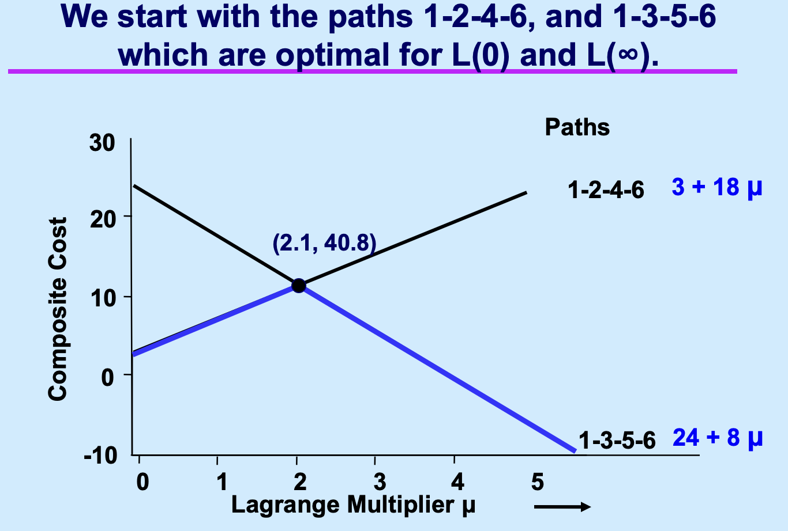
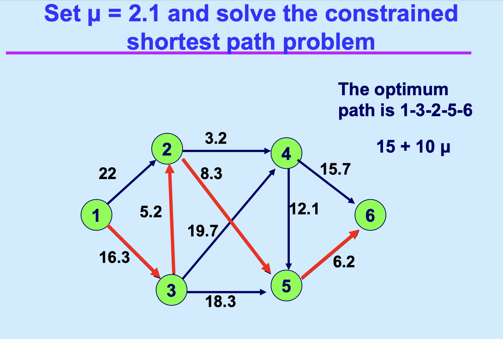
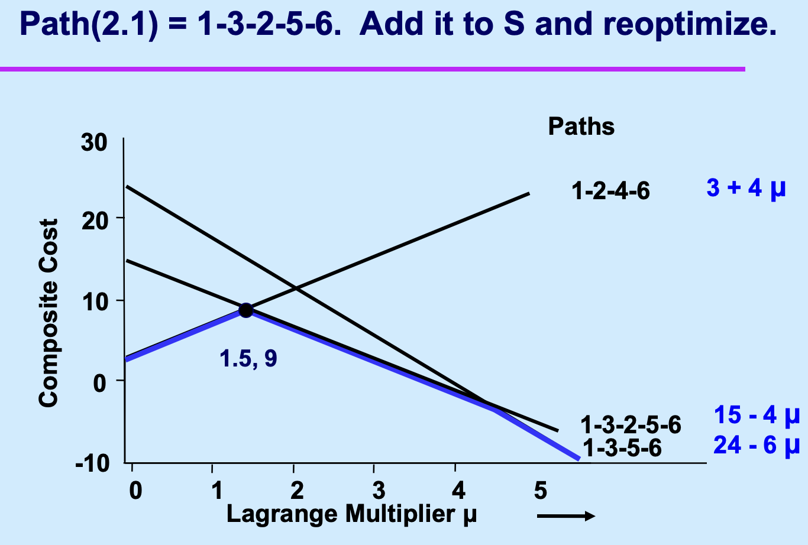
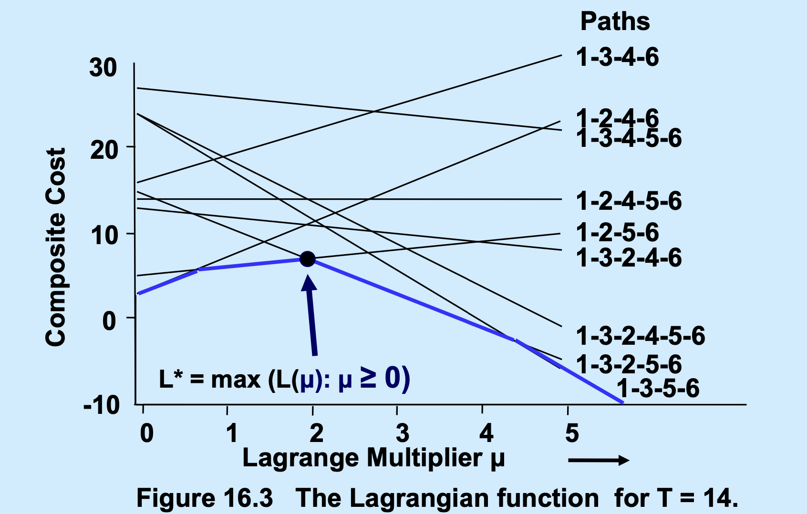

拉格朗日松弛：算法与求解¶
在阅读本笔记前必须阅读的内容：建模篇：拉格朗日松弛. 因为会用到前文的一些Notations。
这一个笔记是前文的一个补充。“求解拉格朗日乘子问题”（Solving the Lagrangian Multiplier Problem）是核心算法部分。其目标是寻找最优的乘子 \(\mu\)，使得拉格朗日下界 \(L(\mu)\) 最大化，即求解
\(L^* = \max \{L(\mu) : \mu \ge 0\}\)
以下是根据课件内容整理的该部分的重点与流程：
核心流程：约束生成法 (Constraint Generation)¶
可以通过约束生成法（也称为先对偶再分解的思路）来寻找 \(L^*\)。这种方法将原本包含大量（甚至指数级）约束的问题简化为在小规模子集上的迭代求解。
具体算法流程： 1. 初始化 (Initialize)：选择一个包含部分可行解（如路径、极点）的初始子集 \(S\)。通常选取在 \(\mu=0\) 和 \(\mu\) 很大时最优的解。 2. 求解受限乘子问题 (Solve Restricted LMP)：在当前的子集 \(S\) 上求解最大化问题，得到当前最优乘子 \(\mu := Multiplier(S)\)。 3. 寻找新的冲突/极点 (Find New Extreme Point)：利用当前的 \(\mu\) 求解拉格朗日松弛子问题 \(L(\mu)\)。记所得到的新的最优解为 \(Path(\mu)\) 或 \(Extreme(\mu)\)。 4. 最优性判断 (Optimality Check)： * 如果 \(L(\mu) = L^*_S\)（即当前下界已无法通过添加 \(S\) 以外的解再提升），则算法停止，当前的 \(\mu\) 即为最优乘子。 * 否则，将新发现的解 \(Path(\mu)\) 加入子集 \(S\)（即 \(S := S \cup \{Path(\mu)\}\)），并返回步骤 2。
按照 \(\mu = 0\) 和 \(\infty\) 的情况分别计算最优解：

基于前两个的均衡解计算 \(\mu\)，并计算在这个参数下的最优解；


继续迭代直到算法终止。

理论重点与核心洞察¶
强调几个关键的数学特性：
- 界限原理 (Bounding Principle)：对于任何 \(\mu \ge 0\)，始终满足 \(L(\mu) \le L^* \le z^*\)。求解乘子问题的本质是不断抬高这个下界以逼近真实最优值 \(z^*\)。
- 凸包关系 (Convex Hull Connection)：
- 求解 \(L^*\) 等价于在原始可行解集的凸包 (Convex Hull) 上进行优化。
- 如果拉格朗日松弛后的亚问题具有整数属性 (Integrality Property)，那么通过该方法得到的最佳下界 \(L^*\) 将与直接求解该问题的线性规划（LP）松弛值 \(z_{LP}\) 完全相等。
- 受限与全局的关系：定义 \(L^*_S\) 为在子集 \(S\) 上的最优值。由于 \(S \subseteq P\)，因此始终有 \(L(\mu) \le L^* \le L^*_S\)。当 \(L(\mu)\) 追平 \(L^*_S\) 时，即达到了全局最优下界。
四、 案例演示：带时间约束的最短路 (CSP)¶
课件通过 \(T=14\) 的 CSP 案例演示了上述流程： * 起步：从两条路径 \(\{1-2-4-6, 1-3-5-6\}\) 开始迭代。 * 迭代：通过计算不同 \(\mu\) 值下的修正成本，不断发现新路径（如 \(1-3-2-5-6\) 和 \(1-2-5-6\)）并加入 \(S\)。 * 结束：直到在 \(\mu=2\) 时找不到能进一步提升下界的新路径，此时 \(L^*=7\)，算法锁定最优乘子。
理解类比：
求解拉格朗日乘子问题就像是在调音。每一条可行路径都是一根弦，它们的交织形成了复杂的包络面（下界函数）。我们通过迭代（约束生成），每次只关注最关键的几根弦，通过反复旋转调音旋钮（调整乘子 \(\mu\)），最终找到让声音最和谐（下界最高）的那个平衡点。